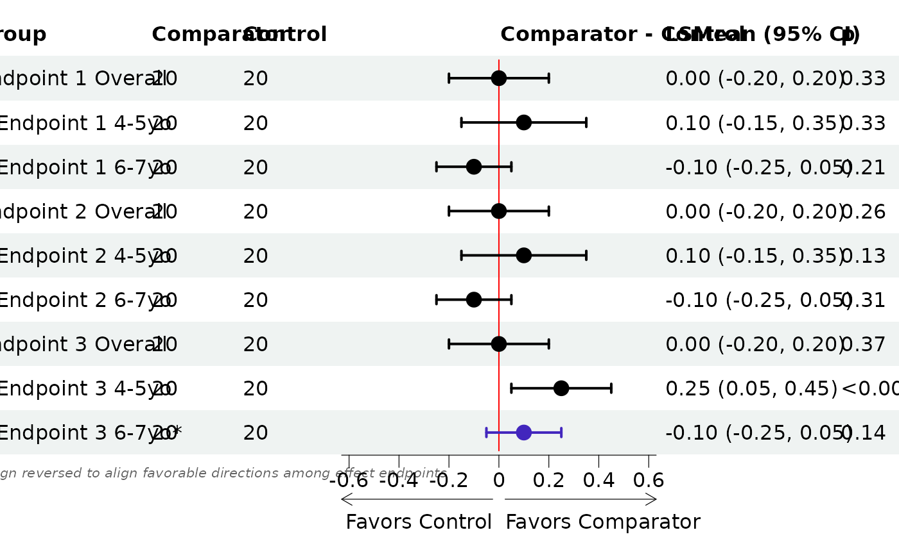
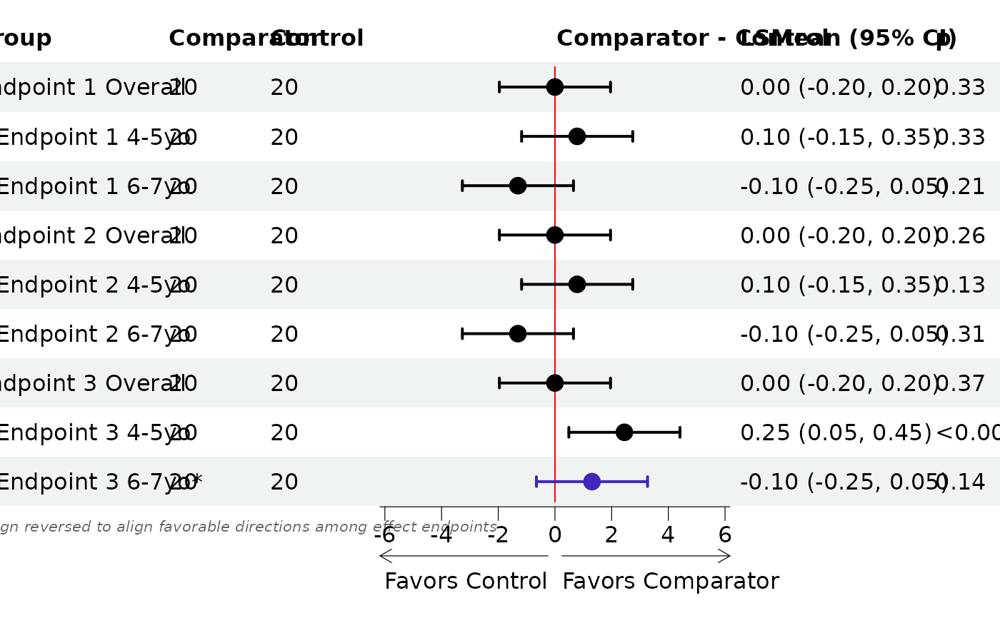
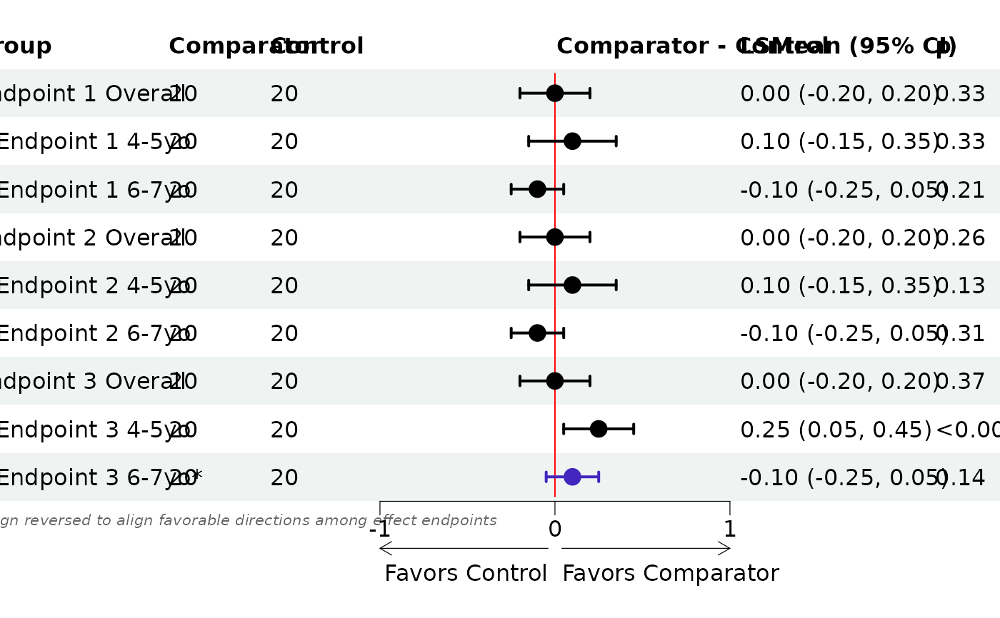
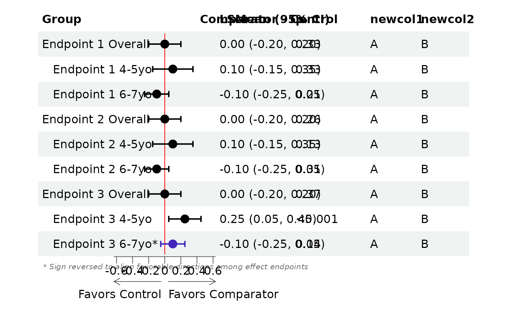

Draw forest plot
Usage
forest_plot(
dt,
indent_subgroups = TRUE,
indent_keyword = "Overall",
standardize_plot = FALSE,
flip_arrows = FALSE,
font_size = NULL,
footnote_size = NULL,
plot_pch = 16,
plot_point_size = NULL,
plot_zoom = 80,
plot_x_ticks = NULL,
plot_symmetric = TRUE,
ci_t_height = 0.2,
ci_color = "#000000",
ci_color_inverted = "#4226bd",
row_height = NULL,
color_by_endpoint = FALSE,
significance_level = 0.05,
display_cols = NULL,
display_widths = NULL,
forest_label = NULL,
digits = 2,
arrow_prefix = "Favors",
arrow_label_left = NULL,
arrow_label_right = NULL,
...
)Arguments
- dt
input data (columns: Endpoint, Group, Comparator, Control, LSMean, low, hi, p, invert))
- indent_subgroups
indent subgroup labels (logical/scalar; default = TRUE)
- indent_keyword
indent keyword (is this useful)
- standardize_plot
normalize/standardize point estimate and CI plot display (logical/scalar)
- flip_arrows
flip directional arrows below forestplot (logical/scalar)
- font_size
font size (numeric/scalar)
- footnote_size
footnote font size (numeric/scalar)
- plot_pch
plotting character (numeric/scalar)
- plot_point_size
size of plotted point estimate (numeric/scalar)
- plot_zoom
zoom level for forestplot (numeric/scalar, range: 0 - 100)
- plot_x_ticks
vector of x-axis tick marks for forestplot (numeric/vector)
- plot_symmetric
should the forestplot have a symmetric x-axis? (logical/scalar)
- ci_t_height
size of confidence interval T endpoint (numeric/scalar; range: 0 - 1)
- ci_color
color used for normal forestplot confidence intervals (character/scalar; hex color code)
- ci_color_inverted
color used for inverted forestplot confidence intervals (character/scalar; hex color code)
- row_height
row height (numeric/scalar)
- color_by_endpoint
add coloring for each endpoint (logical/scalar)
- significance_level
significance level (alpha) for two-sided confidence interval
- display_cols
names of columns to display, in order (character/vector; use NULL for defaults)
- display_widths
column widths for the
display_cols(numeric/vector; use NULL for defaults)- forest_label
label for forest plot column (character/scalar; use NULL for defaults)
- digits
number of digits to round estimate + CI column to (scalar/integer; default = 2; use NULL for no rounding)
- arrow_prefix
prefix to use for favor arrows (character/scalar; default = "Favors")
- arrow_label_left
label for the left-facing arrow (character/scalar; default = NULL (header for control column))
- arrow_label_right
label for the left-facing arrow (character/scalar; default = NULL (header for comparator column))
- ...
additional arguments passed on to
forest_theme
Value
A gtable object
Input Data Requirements
The format of the input data dt is rigid and must include all columns in order,
even when specifying the display_cols and only using a subset. See forest_data
for example input data with the required columns in the correct order.
Customizing columns
Columns can be customized using the display_cols argument, a character vector
with column names in the desired display order. In additional to columns in
the input data (dt), two special column names are:
est+ci: the estimate and confidence interval columnforest: forestplot image column
Note that when including additional columns, they should be placed after the
required columns in the input data (dt).
By default, if display_cols is non-NULL then all column widths will be set to equal.
Use display_widths to further customize column widths; it should be a numeric
vector with length equal to display_cols.
Examples
# draw forestplot
forest_data() |> forest_plot()

# standardize forest CIs
forest_data() |>
forest_plot(
standardize_plot = TRUE
)

# custom x-ticks
forest_data() |>
forest_plot(
row_height = 1.75,
plot_x_ticks = c(-1, 0, 1),
plot_zoom = 100
)

# custom columns
gst::forest_data() |>
dplyr::mutate(
newcol1 = "A",
newcol2 = "B"
) |>
gst::forest_plot(
display_cols = c("Group", "forest", "est+ci", "p", "newcol1", "newcol2"),
display_widths = c(0.15, 0.2, 0.15, 0.15, 0.1, 0.1)
)
